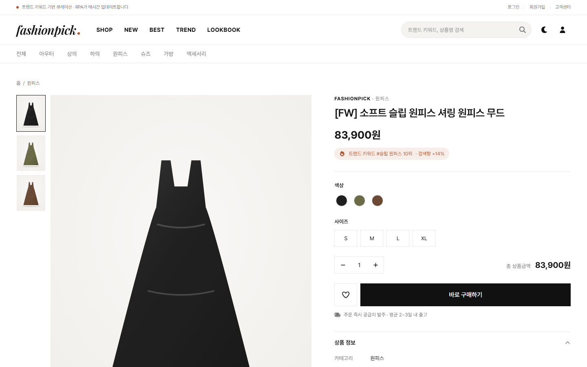
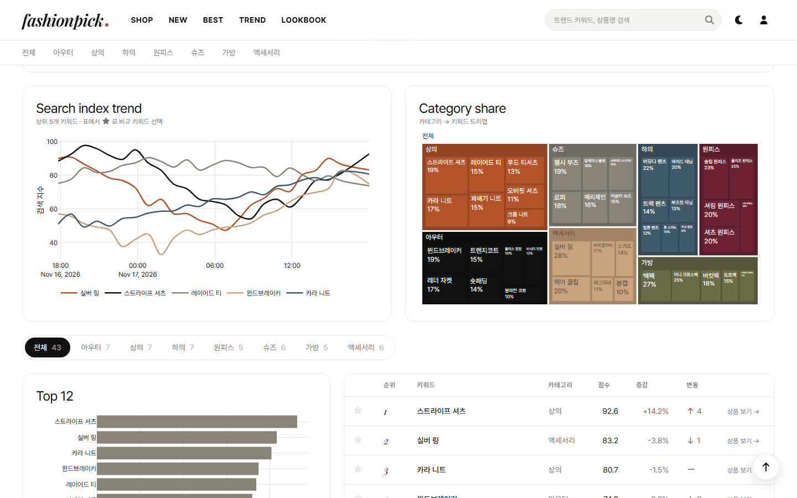
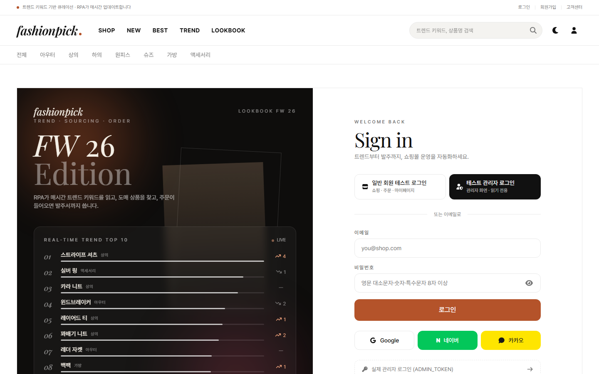
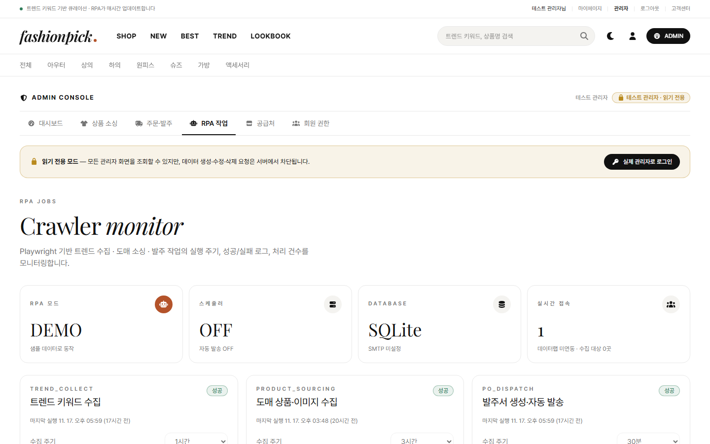
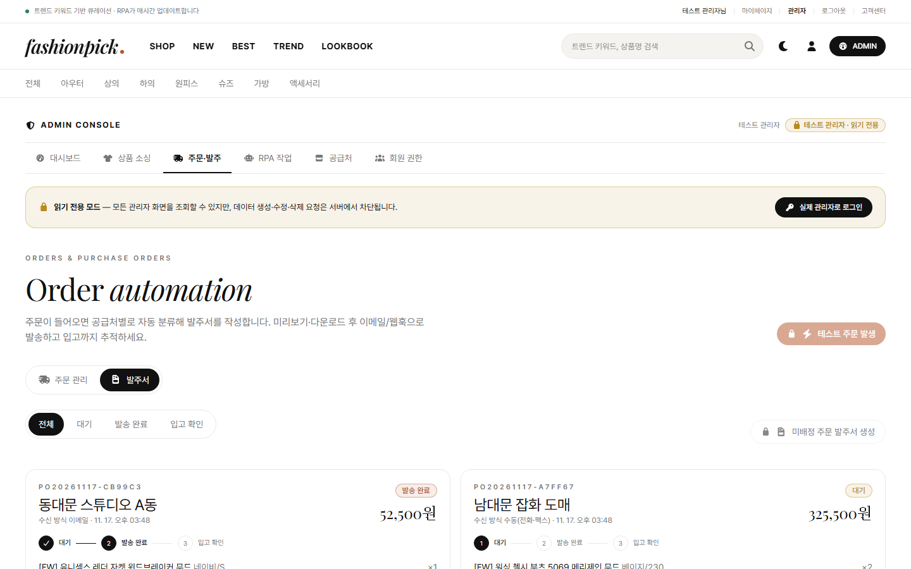
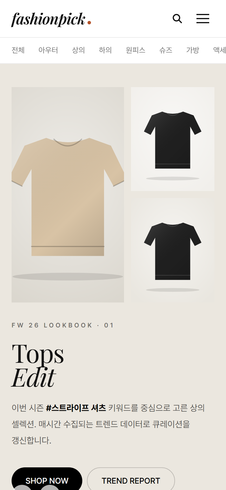
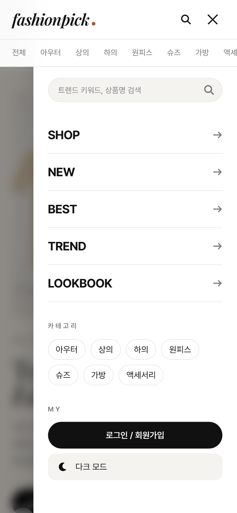

Problem → Solution
트렌드 키워드가 소싱 검색어가 되고, 소싱한 상품이 주문이 되고, 주문이 발주서가 됩니다. 서로 연결된 데이터인데도 매번 사람이 옮겨 적던 과정을 이어 붙였습니다.
네이버 데이터랩 쇼핑인사이트 API와 Playwright 랭킹 수집으로 키워드 순위 변동과 급상승을 탐지합니다.
상위 트렌드 키워드로 도매 상품·이미지를 수집하고 판매가·마진율·상품명을 추천합니다.
주문 즉시 공급처별 발주서(Excel/PDF)를 만들고 이메일·웹훅으로 발송, WebSocket으로 실시간 알림합니다.
RPA Pipeline
asyncio 스케줄러가 주기마다 워커 스레드에서 작업을 실행합니다. 같은 작업은 동시에 한 번만 돌고, 모든 실행은 rpa_logs에 남습니다.
데이터랩 API(앵커 키워드 정규화) + Playwright 랭킹 페이지, robots.txt 확인 · 요청 간격 2초
pandas 스냅샷 비교 — 점수 +15% 또는 순위 +5 이상이면 급상승
상위 8개 키워드로 도매 상품 수집, source_url 기준 upsert
도매가 × 2.2 → 900원 엔딩 (39,500원 → 86,900원, 마진 54.5%)
공급처별 발주서 병합 · openpyxl/ReportLab · SMTP·웹훅 · WebSocket
Architecture
정적 SPA는 Netlify(스테이징)와 Render Static(프로덕션)에, Playwright Chromium이 필요한 API는 Render Docker에 올렸습니다. 무료 티어 단일 인스턴스에 맞춰 RPA 엔진은 API 프로세스 안의 스케줄러 + 워커 스레드로 설계했습니다.
REST (JWT Bearer) · WebSocket /ws ↓
SQLAlchemy (PyMySQL + TLS) ↓ Playwright · Requests ↓
| 영역 | 기술 | 고른 이유 |
|---|---|---|
| Frontend | React 19 (Vite) · Tailwind CSS v4 · Plotly.js · FontAwesome | 디자인 토큰과 @utility로 공통 규칙 관리, 다크 모드 |
| Backend | Python 3.11 · FastAPI · WebSockets · SQLAlchemy 2 · PyJWT | 비동기 + WebSocket 기본 지원, /docs 자동 API 문서 |
| RPA · Data | Playwright · Requests · pandas · NumPy | 자바스크립트 렌더링 페이지 수집, 스냅샷 비교·집계 |
| Document | openpyxl · ReportLab (한글 CID 폰트) | 외부 서비스 없이 서버에서 Excel/PDF 발주서 생성 |
| Database | TiDB Cloud · SQLite | 운영은 서버리스 MySQL 호환, 테스트는 매번 임시 SQLite |
| Cloud · CI/CD | Render · Netlify · Docker · GitHub Actions · GitHub Pages | Git 연동 자동 배포, CI는 pytest + 프런트 빌드 |
Screens
모든 페이지가 같은 헤더·푸터를 쓰고, 처음 접속하면 메인 페이지가 열립니다. 제목은 Playfair Display, 본문은 Pretendard. 상품 그리드는 모바일 2열 · 태블릿 3열 · 데스크톱 4열, 이미지는 4:5 비율입니다.







| 권한 | 진입 방법 | 할 수 있는 일 |
|---|---|---|
| 일반 회원 | 회원가입 · 소셜 로그인 · 일반 회원 테스트 로그인 | 쇼핑 · 주문 · 마이페이지(주문 진행 단계 · 알림 설정) |
| 실제 관리자 | /admin/login + .env의 ADMIN_TOKEN (5회 실패 시 5분 잠금) | 관리자 화면 전체 + 모든 데이터 생성·수정·삭제 |
| 테스트 관리자 | 로그인 화면의 테스트 관리자 로그인 | 관리자 화면 조회만 — 변경 요청은 미들웨어와 require_admin 두 겹으로 차단 |
Troubleshooting
open Dockerfile: no such file 이후 libatomic.so.1 없음 (exit 127)libatomic1·libstdc++6 선설치orders.user_id가 기존 운영 DB에 생기지 않음create_all은 없는 테이블만 생성ensure_schema, 향후 AlembicPresentation · 20 min · 17 slides
백엔드 · RPA 파이프라인 · 데이터 분석 담당 김모란이 발표합니다. 슬라이드별 시각 자료, 본문, 발표자 스크립트, 예상 질문은 발표 구성안 문서에 있습니다.
Team · 3조
PM · ARCHITECTURE · DEVOPS
BACKEND · RPA · DATA
FRONTEND · UI/UX
ORDER · REALTIME · AUTH · QA
Documents